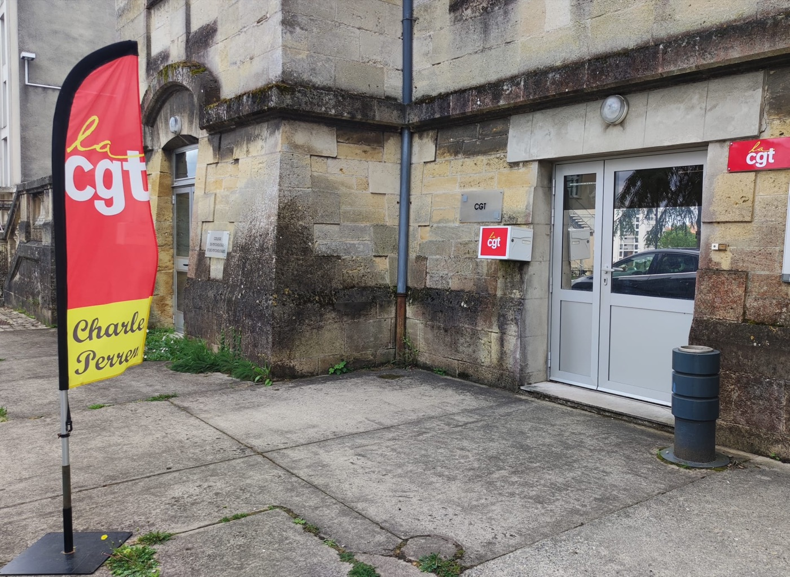
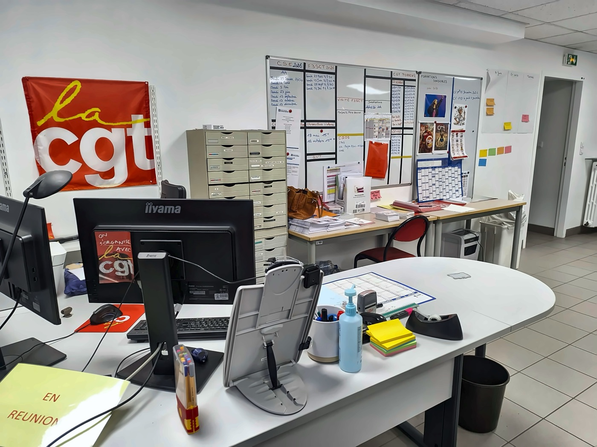

Une question sur vos droits, une situation difficile ? Nos délégués sont là pour vous.


Syndiqué ou non, notre porte vous est toujours ouverte.
cgt@ch-perrens.fr · 05.56.56.35.65 · 07.68.03.34.15 · Facebook.com/CGT.Perrens · @cgt.perrens